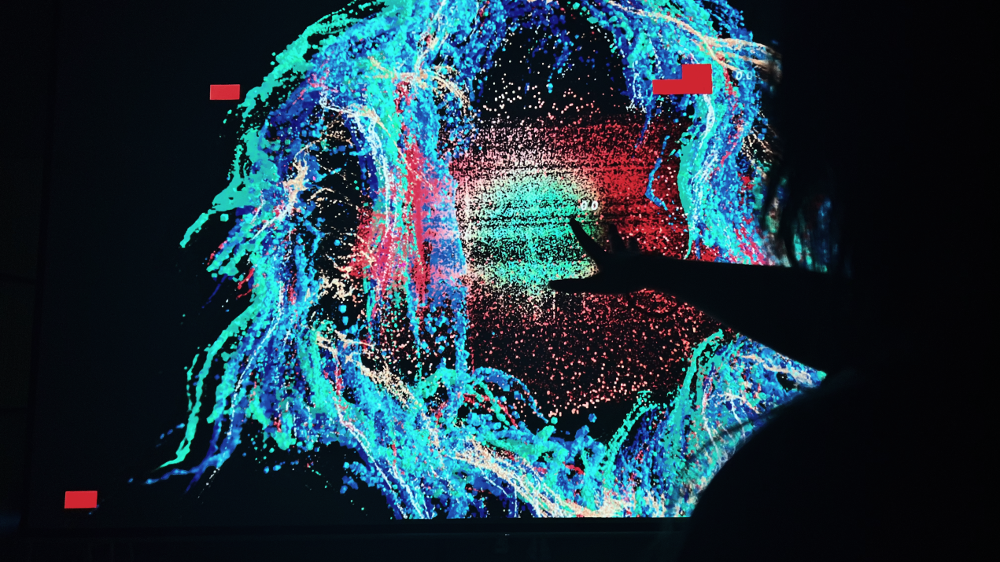
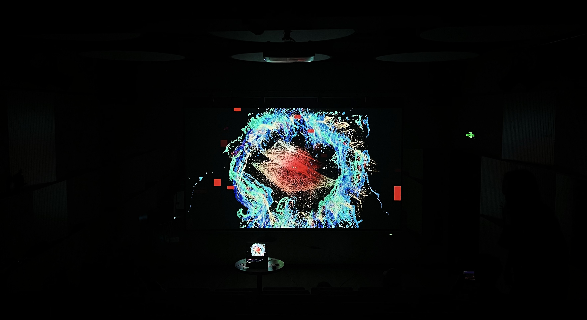
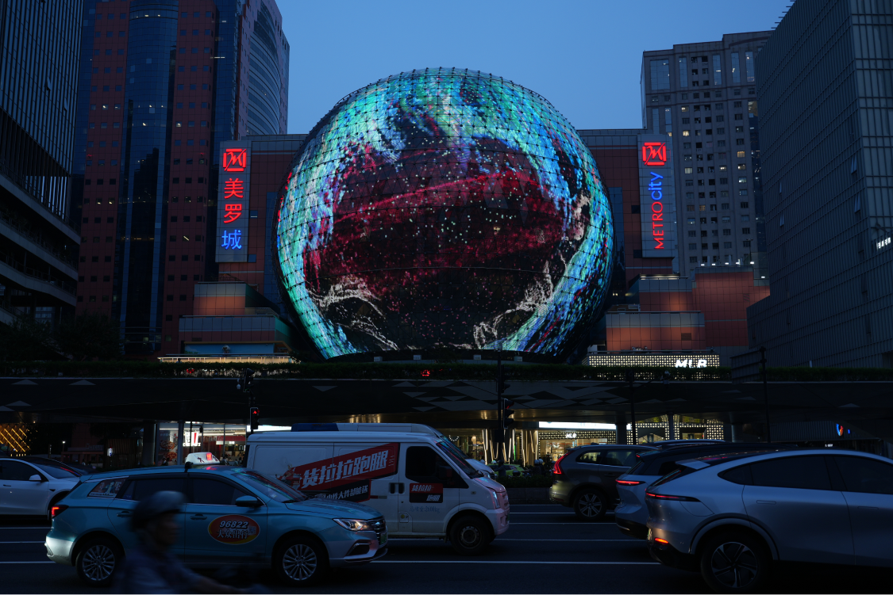
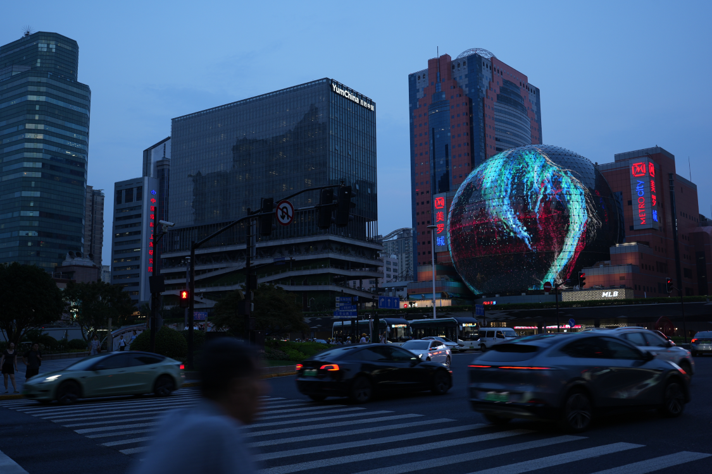
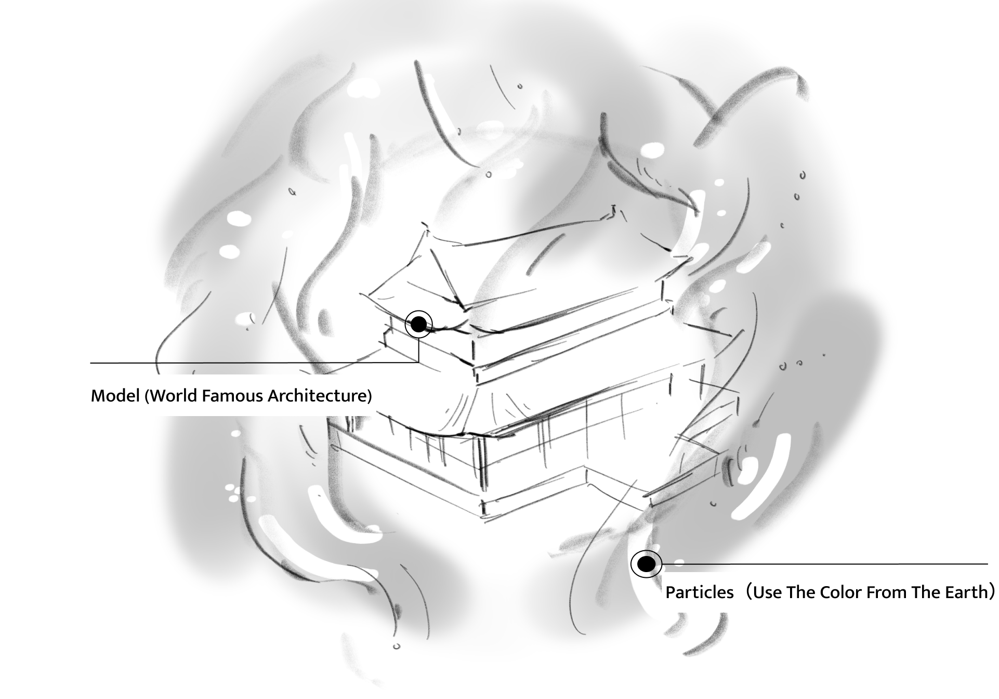
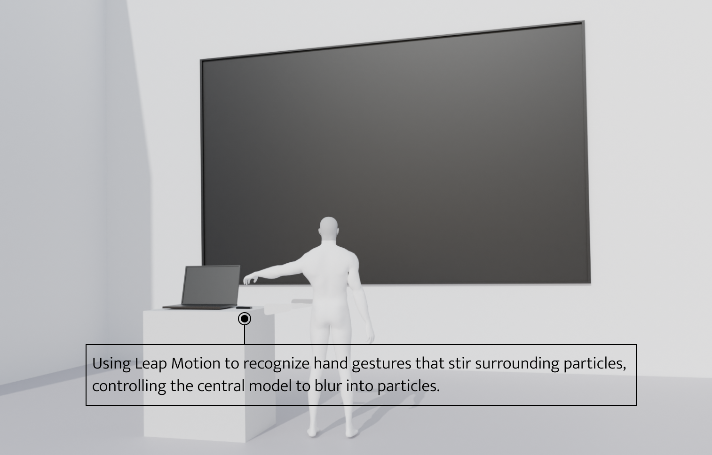
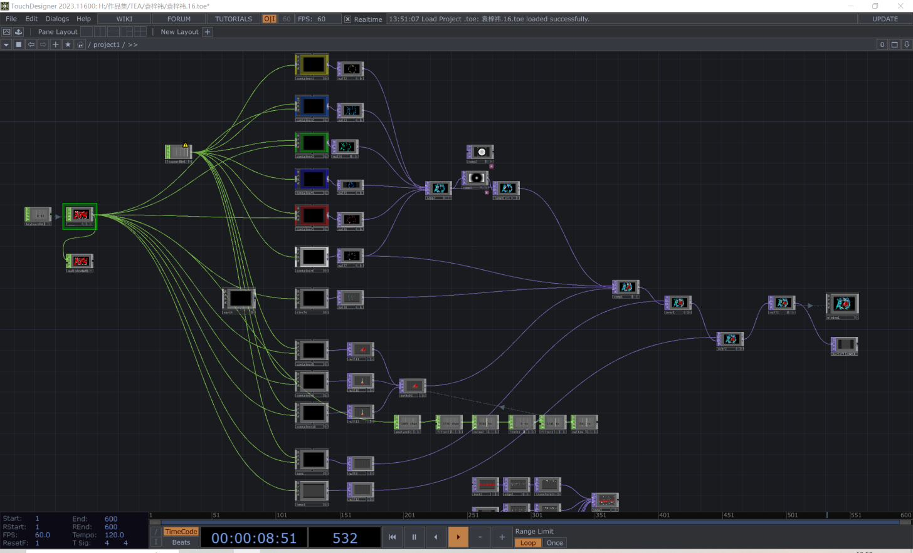
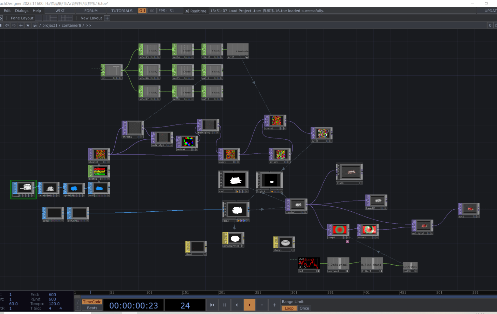

Echoes of
Nature
Echoes of Nature
"Echoes of Nature" investigates the shift from human dominance to nature’s rebellion. Utilizing Leap Motion for gesture-based particle interaction and real-time audio reactivity, the piece challenges the viewer's sense of control. As interactions trigger visual distortions in "human" zones, the work illustrates the anxiety of failing environmental strategies and the emergence of a new ecological order.




// PROCESS



